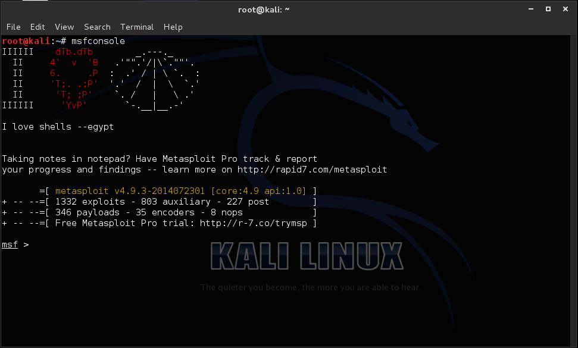

Metasploit, Metasploit Pen Testing
Tool, est un projet open source
en relation avec la sécurité des systèmes informatiques. Son but est de fournir des informations
sur les vulnérabilités de systèmes informatiques, d'aider à la pénétration et au développement
de signatures pour les IDS (Système de détection d'intrusion).
Le plus connu des sous-projets est le Metasploit Framework, un outil pour le développement et
l'exécution d'exploits (logiciels permettant d'exploiter à son profit une vulnérabilité)
contre une machine distante. Les autres sous-projets importants sont la base de données
d'Opcode, l'archive de shellcode, et la recherche dans la sécurité.
Créé à l'origine en langage de programmation Perl, Metasploit Framework a été complètement
ré-écrit en langage Ruby. C'est un outil très puissant pour les
chercheurs en sécurité travaillant sur les potentielles vulnérabilités de systèmes informatiques.
Comparable aux produits commerciaux tels que Immunity's CANVAS ou Core Impact, Metasploit
peut être utilisé par les administrateurs pour tester la vulnérabilité des systèmes informatiques
afin de les protéger, ou par les pirates et les script kiddies (néophytes dépourvus des principales
compétences en matière de gestion de la sécurité informatique) à des fins de piratage. Comme
la plupart des outils de sécurité informatique, Metasploit peut être utilisé à la fois de
manière légale (White hat) et à la fois pour des activités illégales (Black hat).
